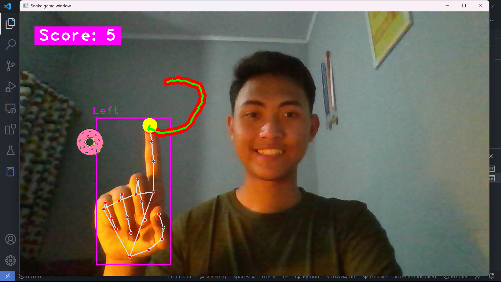

PROGRAMMING
Snake Game w/ OpenCV
I created snake game but with computer vision. This is something that I created during last year holiday.
13/03/2023

ARDUINO
Automatic Handsanitizer
This is actually a past project that I created last year. But it's very interesting since it was my first time working with arduino, so I just wanna share this to you.
13/03/2023